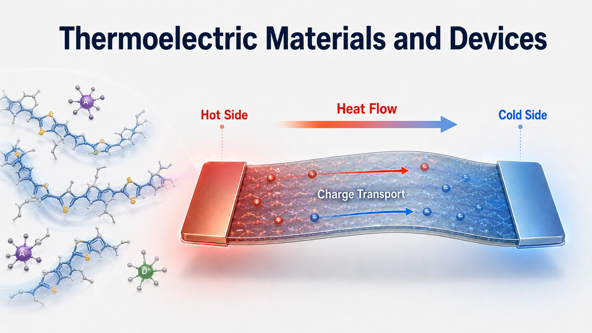
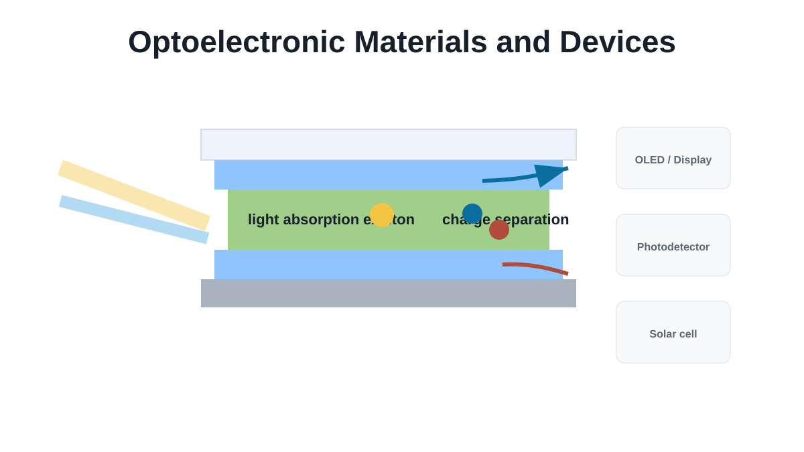
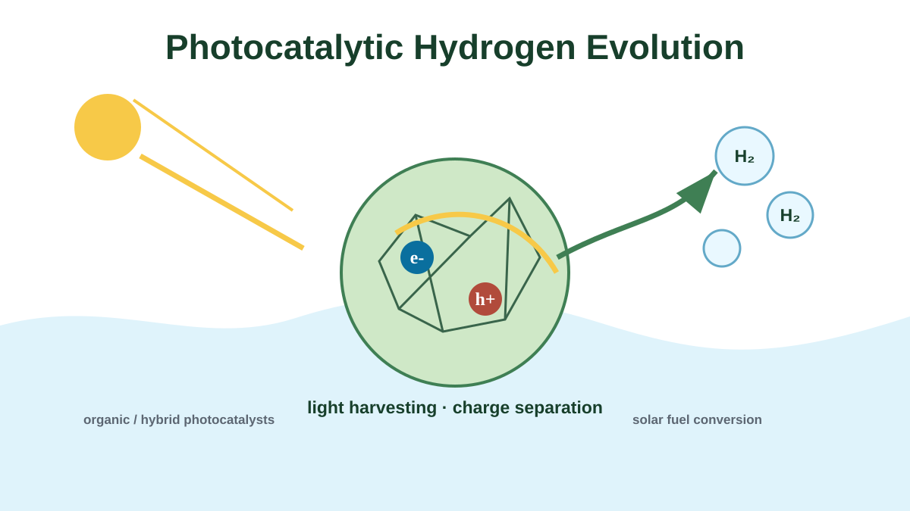
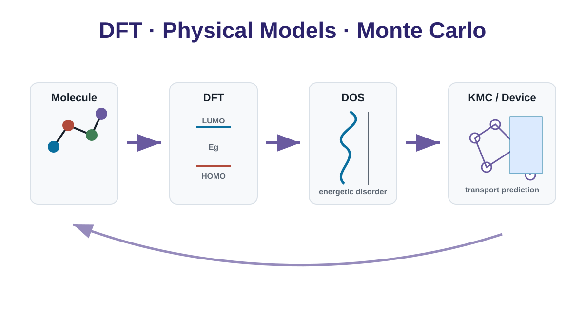

Direction 01
Organic thermoelectric materials and flexible devices
We develop organic thermoelectric materials and devices by tuning molecular
packing, doping, carrier concentration and thermal transport. The goal is to
build efficient, flexible systems for low-grade heat harvesting and wearable electronics.
- Doping control
- Charge transport
- Flexible devices
- Energy conversion

Direction 02
Organic optoelectronic materials and devices
We investigate light absorption, exciton generation, charge separation and
interfacial transport in organic thin-film devices, connecting materials
chemistry with device-level performance.
- Exciton physics
- Thin-film devices
- Interface engineering
- Photoresponse

Direction 03
Photocatalytic hydrogen evolution
We design organic and hybrid photocatalytic materials to improve visible-light
harvesting, charge separation and surface reaction kinetics for solar hydrogen production.
- Solar fuels
- Hydrogen evolution
- Photocatalysts
- Structure-activity relationship

Direction 04
DFT, physical models and Monte Carlo simulation
We combine density functional theory, transport models and Monte Carlo simulation
to understand energetic disorder, hopping transport, doping mechanisms and device physics.
- DFT
- Kinetic Monte Carlo
- Transport models
- Device prediction